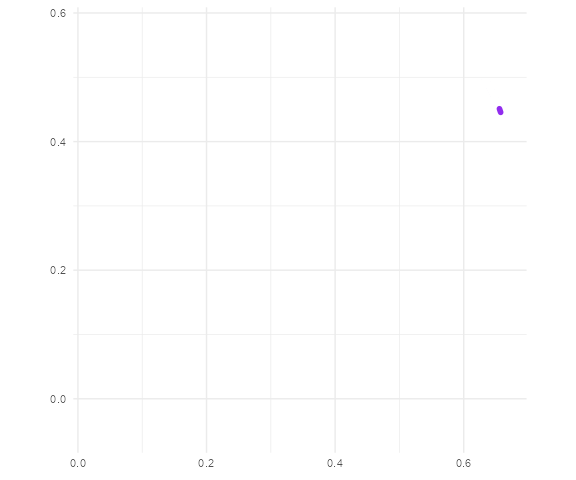
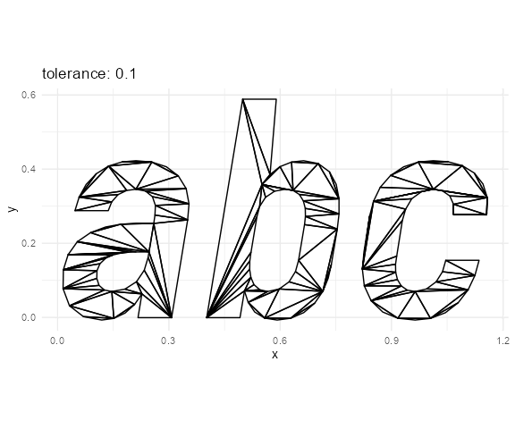

The string2path R package converts a text to paths of the outlines of each glyph, based on a font data. Under the hood, this package is powered by the savvy framework to use these two Rust crates:
-
ttf-parser for parsing font data. TrueType font (
.ttf) and OpenType font (.otf) are supported. - lyon for tessellation of polygons and flattening the curves.
Installation
install.packages("string2path")Development version
The development version is available on R-universe:
install.packages("string2path",
repos = c(
yutannihilation = "https://yutannihilation.r-universe.dev",
CRAN = "https://cloud.r-project.org"
)
)If you want to install from source, you need to have Rust toolchain installed before trying to install this package. See https://www.rust-lang.org/tools/install for the installation instructions.
Example
string2path()
library(string2path)
library(ggplot2)
d <- string2path("カラテが\n高まる。", "Noto Sans JP", font_weight = "bold")
d <- tibble::rowid_to_column(d)
ggplot(d) +
geom_path(aes(x, y, group = path_id, colour = factor(glyph_id)),
linewidth = 1.5) +
theme_minimal() +
coord_equal() +
theme(legend.position = "top") +
scale_colour_viridis_d(option = "H")
library(gganimate)
d <- string2path("蹴", "Noto Sans JP")
d <- tibble::rowid_to_column(d)
ggplot(d) +
geom_path(aes(x, y, group = path_id),
linewidth = 2, colour = "purple2", lineend = "round") +
theme_minimal() +
coord_equal() +
transition_reveal(rowid)
dump_fontdb()
Note that "Noto Sans JP" above (and "Iosevka SS08" below) is the font installed on my local machine, so the same code might not run on your environment. You can use dump_fontdb() to see the available combination of font family (e.g. "Arial"), weight (e.g. "bold"), and style (e.g. "italic").
dump_fontdb()
#> # A tibble: 449 × 5
#> source index family weight style
#> <chr> <int> <chr> <chr> <chr>
#> 1 "C:\\WINDOWS\\Fonts\\arial.ttf" 0 Arial normal normal
#> 2 "C:\\WINDOWS\\Fonts\\arialbd.ttf" 0 Arial bold normal
#> 3 "C:\\WINDOWS\\Fonts\\arialbi.ttf" 0 Arial bold italic
#> 4 "C:\\WINDOWS\\Fonts\\ariali.ttf" 0 Arial normal italic
#> 5 "C:\\WINDOWS\\Fonts\\ariblk.ttf" 0 Arial black normal
#> 6 "C:\\WINDOWS\\Fonts\\bahnschrift.ttf" 0 Bahnschrift normal normal
#> 7 "C:\\WINDOWS\\Fonts\\BIZ-UDGothicB.ttc" 0 BIZ UDGothic bold normal
#> 8 "C:\\WINDOWS\\Fonts\\BIZ-UDGothicB.ttc" 1 BIZ UDPGothic bold normal
#> 9 "C:\\WINDOWS\\Fonts\\BIZ-UDGothicR.ttc" 0 BIZ UDGothic normal normal
#> 10 "C:\\WINDOWS\\Fonts\\BIZ-UDGothicR.ttc" 1 BIZ UDPGothic normal normal
#> # ℹ 439 more rowsYou can also specify the font file directly. Pomicons is a font available on gabrielelana/pomicons, licensed under SIL OFL 1.1.
pomicons_file <- here::here("fonts", "Pomicons.ttf")
if (!file.exists(pomicons_file)) {
dir.create(dirname(pomicons_file))
curl::curl_download(
"https://github.com/gabrielelana/pomicons/blob/master/fonts/Pomicons.ttf?raw=true",
destfile = pomicons_file
)
}
d_tmp <- string2path("\uE007", pomicons_file)
ggplot(d_tmp) +
geom_path(aes(x, y, group = path_id), linewidth = 5, colour = "#26d1a9") +
theme_minimal() +
coord_equal()
string2fill()
d <- string2fill("abc", "Iosevka SS08", font_weight = "bold", font_style = "italic")
ggplot(d) +
geom_polygon(aes(x, y, group = triangle_id, fill = factor(triangle_id %% 7)),
colour = "grey", linewidth = 0.1) +
theme_minimal() +
coord_equal() +
theme(legend.position = "none") +
scale_fill_viridis_d(option = "H")
string2stroke()
for (w in 1:9 * 0.01) {
d <- string2stroke("abc","Iosevka SS08", font_weight = "bold", font_style = "italic", line_width = w)
p <- ggplot(d) +
geom_polygon(aes(x, y, group = triangle_id, fill = factor(triangle_id %% 2)),
colour = "grey", linewidth = 0.1) +
theme_minimal() +
coord_equal() +
theme(legend.position = "none") +
scale_fill_manual(values = c("purple", "pink"))
plot(p)
}
tolerance
tolerance controls resolution of the tessellation. You can reduce tolerance to get higher resolutions. In most of the cases, 1e-5 ~ 1e-6 should be enough. For more details, please refer to lyon’s official document.
for (tolerance in c(1e-1, 1e-2, 1e-3, 1e-4, 1e-5, 1e-6, 1e-7)) {
d <- string2fill("abc", "Iosevka SS08", font_weight = "bold", font_style = "italic", tolerance = tolerance)
p <- ggplot(d) +
geom_polygon(aes(x, y, group = triangle_id),
fill = "transparent", colour = "black", linewidth = 0.5) +
theme_minimal() +
coord_equal() +
ggtitle(paste0("tolerance: ", tolerance))
plot(p)
}